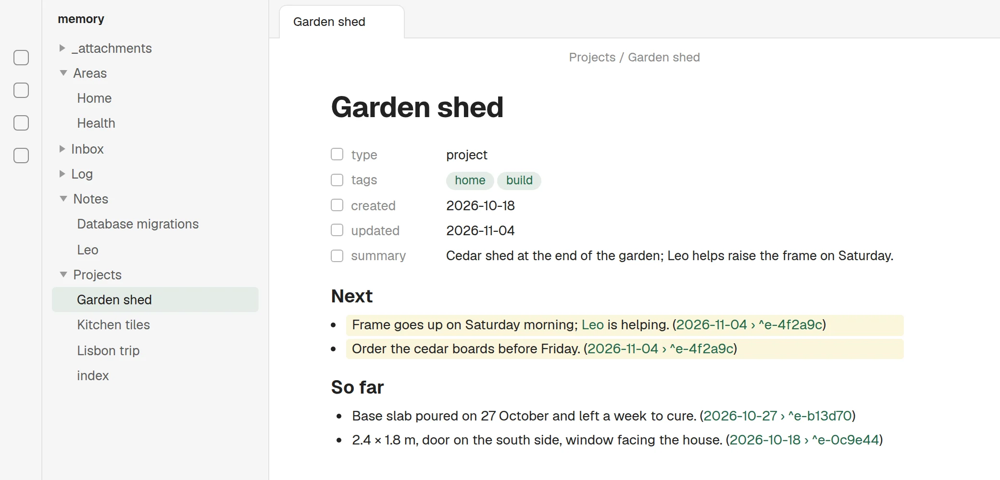
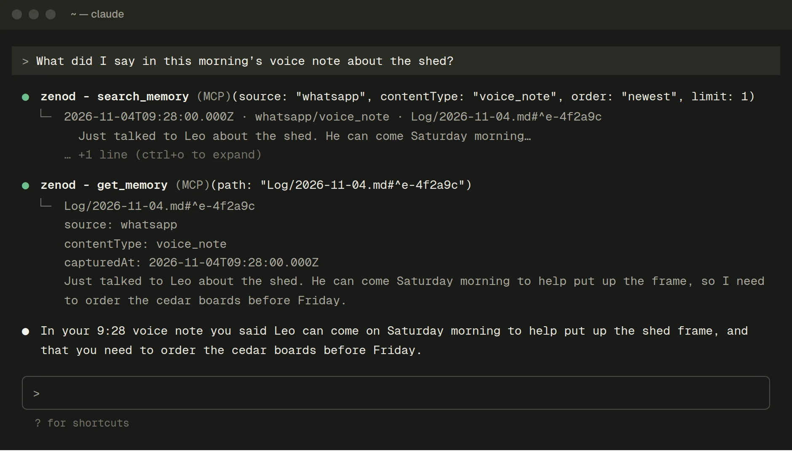
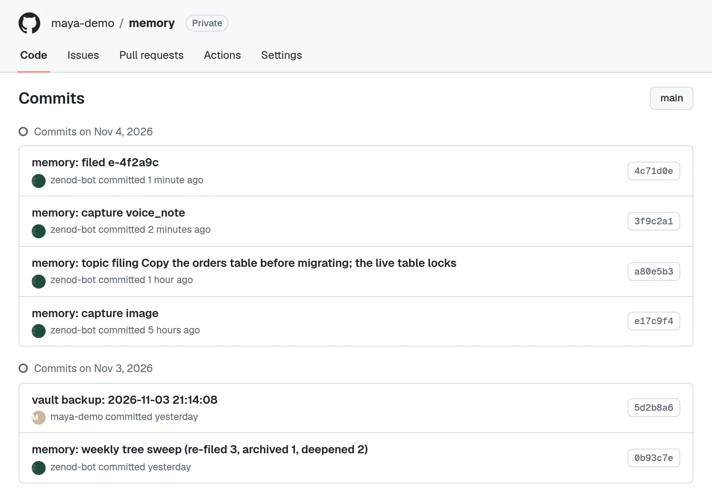
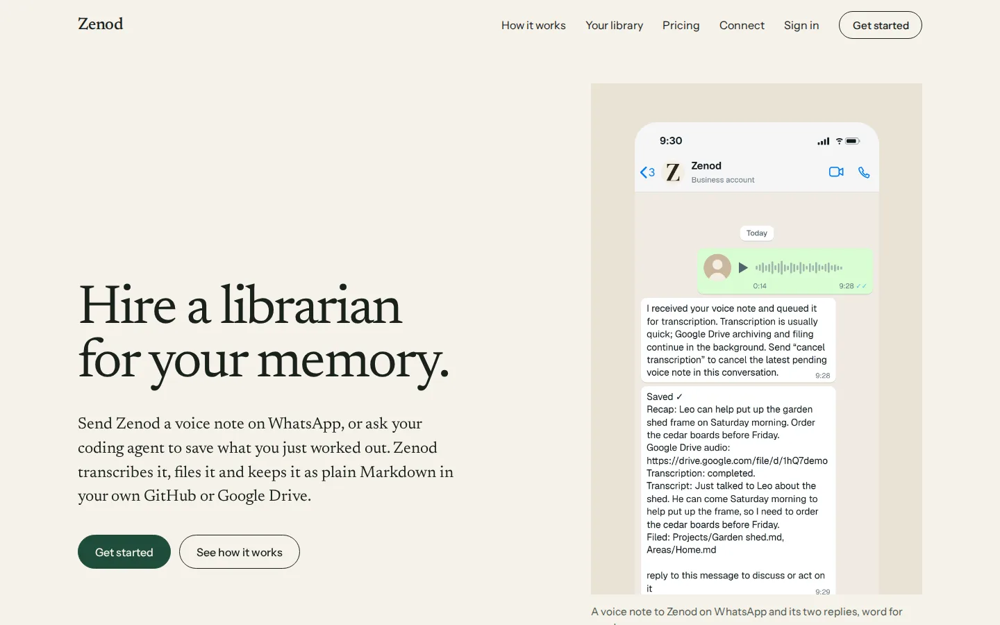

Self-hosted
Free
Run Zenod on your own server with your AI provider key, a Telegram bot and a GitHub repository for your library.
Zenod, the product deck · 8 November 2026
It ingests and digests, so you can reach your memory from any agent and build on it.
Zenod is live in production today at zenod.dev. This is its product deck: what it does today, who owns the memory, what it costs, and what the next chapter adds. zenod.dev will follow it. Frames marked Live are the real product with demo notes. Frames marked Coming are not built yet.
1 Are we in line?
Yes.
Zenod is the AI librarian of your memory, and it is already working in production. It ingests what you send it: WhatsApp voice notes, photos and messages, and the lessons your coding agent saves. It digests them: transcribes, keeps the original word for word, files each one onto the right page and finds your topics by itself. It keeps the library as plain Markdown in your own GitHub or Google Drive, so any agent you use can reach your memory over MCP and build on it.
This chapter does not change what Zenod is. It gives the library a window: a chat to ask it, a graph to walk it, retrieval that shows which memories it used, and digestion that runs every night.
Confirmed on 8 November: we are in line. Every slide here follows this paragraph, and zenod.dev will follow this deck (slide 14).
2 The library, in four verbs
WhatsApp voice notes, photos and messages. Lessons saved from Claude Code, Cursor or VS Code. Telegram when you host it yourself.
AddsAsk or keep from a chat in the app.
Transcribed, logged word for word, filed onto the right pages, topics found by itself, re-sorted weekly.
AddsA nightly sweep that also rebuilds the links, with its last run shown.
Seven MCP tools for Claude, ChatGPT, Cursor, VS Code and Gemini CLI. Listed in the official MCP Registry.
AddsThe top five memories with a match percentage and a link.
Agents read the exact entry and work from it. Plain Markdown you own, every change a commit.
AddsA chat-first app and a graph you can walk.
3 Live today: ingest Live
The real replies, word for word: a receipt at once, then Saved with the recap, the transcript and the pages it was filed on.
4 Live today: digest, then access from any agent Live


Live on cloud.zenod.dev and listed in the official MCP Registry as dev.zenod/memory. zenod.dev/connect has steps for Claude, ChatGPT, Cursor, VS Code and Gemini CLI. Search finds the right page in the top five for 10 of 10 test questions, in 46 ms on the server.
5 Live today: your memory, your remit Live
Zenod is the intelligent layer for ingestion and digestion. The library stays in your own GitHub or Google Drive as plain Markdown.

6 Live today: pricing Live
Free
Run Zenod on your own server with your AI provider key, a Telegram bot and a GitHub repository for your library.
€9 per month + VAT
We run it for you. Managed AI usage and WhatsApp are included. Your library in GitHub or in a Google Drive folder the app creates. Checkout is open on zenod.dev.
€0 by invite
Zenod Hosted with an invite code: checkout comes to €0 with no card, and AI usage has a cap. For the first five testers.
These are the only plans, as on zenod.dev/pricing today. The same open-source engine runs in each, and your memory is ordinary Markdown either way.
7 What this chapter adds on top
| Piece | Live today | This chapter adds |
|---|---|---|
| Asking | You ask through a connected agent. The signed-in app opens on an overview of cards. | The app opens on a chat that answers from your memory, with links. |
| Seeing | A two-level tree of the topics Zenod found. Links between notes are read but not shown. | A graph of every memory and link you can walk. |
| Retrieval | A ranked top five over MCP, fast and accurate. Scores are raw numbers. | The same five with a match percentage and a link, lit up in the graph. |
| Digestion | Filed on arrival. Topics re-found once a week, Sunday night. | Every night, links rebuilt, last run shown in the app. |
8 Coming: the app opens on a chat Coming
The same answers your agents get over MCP today, now in the app, with the memories used as links. Settings move to the side.
Proposed default: a question is answered and nothing is saved. Tap keep to save a message, as WhatsApp does today. WhatsApp itself does not change.
9 Coming: a new memory joins the library Coming
New memory
Leo can help put up the garden shed frame on Saturday morning. Order the cedar boards before Friday.
The voice note from slide 3 lands on the two pages its receipt names. That filing is live today. The graph view that shows it is coming.
10 Coming: retrieval that shows its strength Coming
Search over MCP already returns a ranked five today. This adds the percentage and the link, in the app and for Claude, ChatGPT or Cursor alike. The score is how well each memory matches against the best match, not a probability.
11 Digestion: live, and nightly next
12 The build plan, in proposed order
Efforts are estimates. Each step ships into production on its own, next to everything already live, and stays once it passes.
13 What could go wrong
14 Confirmed: zenod.dev will follow this deck
Confirmed on 8 November. It already shares the paper, the green and the type. It takes on the deck's shape: the librarian line first, the four verbs as its spine, one idea per screen, these animations, the remit and the prices.
Live today on zenod.dev

Proposed opening screen, mockup
The AI librarian of your memory.
It ingests and digests, so you can reach your memory from any agent and build on it.
Get started15 What we propose next
Ranked retrieval with a match percentage, on MCP first. It is the engine the chat and the lit-up graph both run on, and every agent that already reaches Zenod gets it the same day.
Zenod, the product deck: EPIC-12 plan, round 3. Live frames are the real product with demo people and notes, the same ones zenod.dev shows, and the WhatsApp replies are production wording. Coming frames use invented demo data. Prices as on zenod.dev/pricing on 8 November 2026. Today's figures: zenod.dev, cloud.zenod.dev health, the MCP Registry entry dev.zenod/memory, and the memory-tree evidence of 2 November 2026.